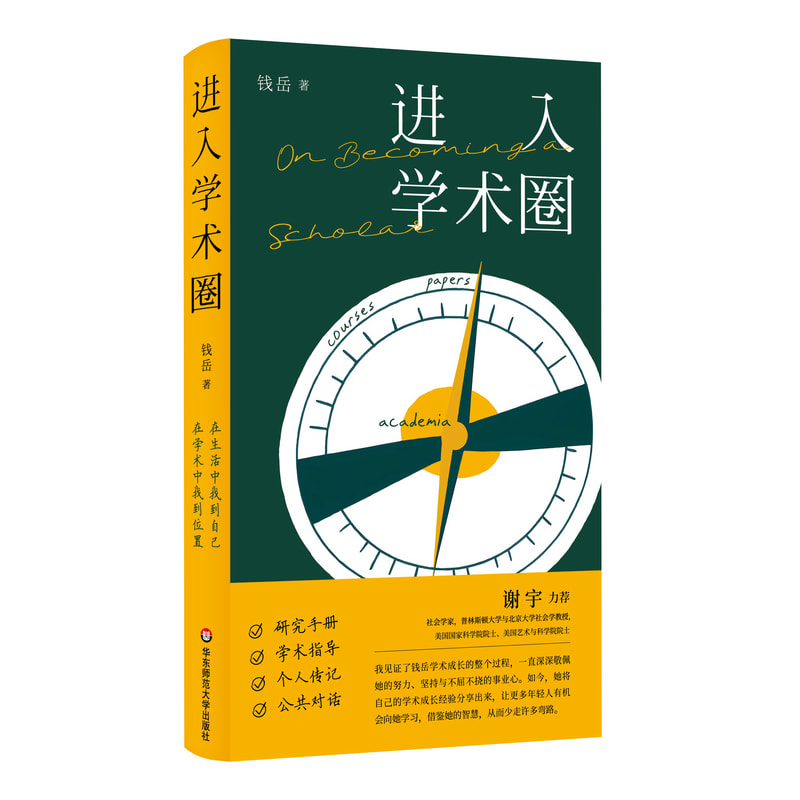

Research
How mothers shape educational mobility
Research across 106 societies examines how mothers’ and fathers’ education shape children’s educational opportunities.
Nature Human Behaviour · 2023
Read the paper ↗pronounced Yew-ay Chian
I am a Professor of Sociology at The Chinese University of Hong Kong. My research examines how gender, family, work, and demographic processes shape inequality and well-being, particularly in East Asia and North America. I received my PhD in Sociology from The Ohio State University.
I have published over 80 articles in leading journals such as Nature Human Behaviour, PNAS, American Sociological Review, and Journal of Marriage and Family, and delivered over 50 invited talks across North America, Asia, and Europe.
My research has been featured by The New York Times, The Washington Post, and The Economist, and cited in policy publications from the United Nations, World Bank, and World Health Organization.

Research
Research across 106 societies examines how mothers’ and fathers’ education shape children’s educational opportunities.
Nature Human Behaviour · 2023
Read the paper ↗Research grant
Leading a federally funded project on the human experiences and mental health consequences of COVID-19 quarantine.
CAD 400,468 in research funding · 2020
Read the UBC story ↗Public lecture
Stanford University · February 2024
Chinese Politics & Society Public Lecture Series
Public talk
A talk exploring why we marry and how marriage is changing, viewed over 3 million times.
Watch the talk ↗Op-ed
An op-ed exploring how racial stereotypes shape online dating experiences, viewed nearly 400,000 times.
Read the op-ed ↗
Homepage design 2 · Compare with the original homepage ↗